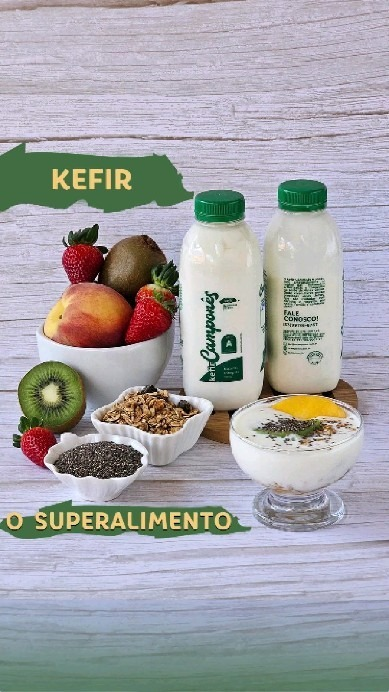
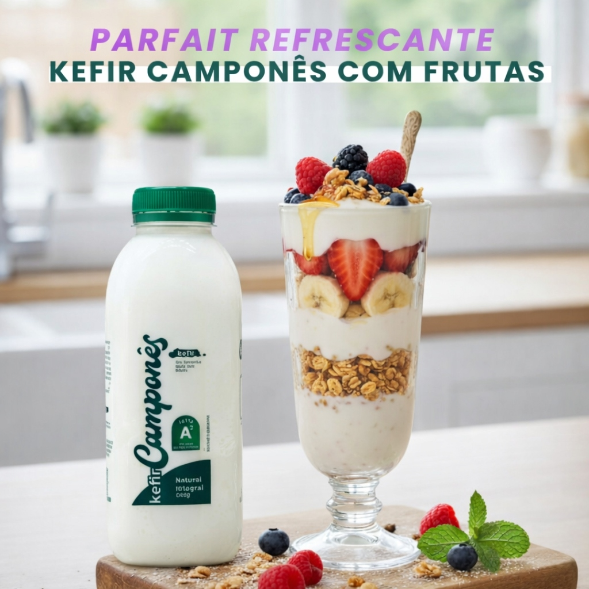
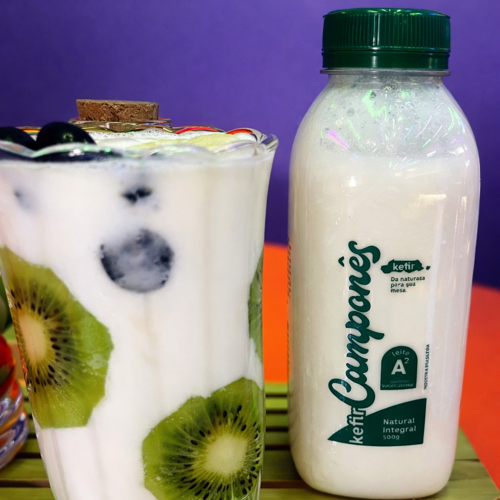

Transformando a tradição do campo com tecnologia de ponta e sustentabilidade para uma nova geração.
No Coração do Kefir Camponês, acreditamos que o futuro da alimentação está no equilíbrio perfeito entre os métodos ancestrais e as inovações tecnológicas de última geração.
Natural
Fermentação
Aditivos

Compromisso com a pureza e a saúde em cada gota.
Respeito total ao meio ambiente em todos os nossos processos produtivos.
Rigoroso controle biológico e nutricional garantindo o melhor produto final.
Foco na saúde e vitalidade dos nossos consumidores através da nutrição viva.
Nossos maiores sucessos e o impacto visual da nossa tecnologia em campo aberto.


Estamos prontos para ouvir seus desafios e propor soluções inovadoras. Fale conosco.
Região Rural Premium - BR
contato@kefircampones.com.br